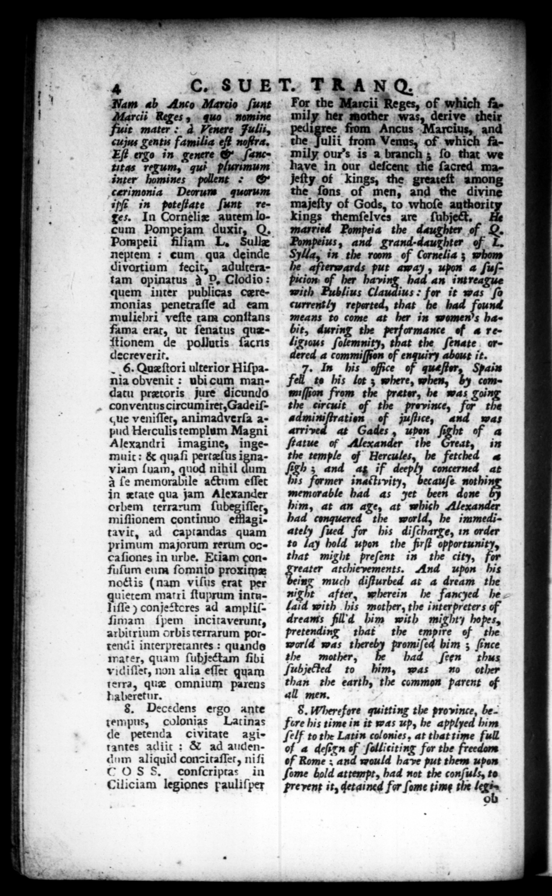

— — — — — = | | N | ed — ̃ — ——— —ͤ—e—— — — = 2 * % 5 — „ p ws ——— — ͤ— —— — / "ww os -- N 4 c. SET. TRAN Q. / Tam ab Anco Marcio ſunt cis Reges , - quo nomine t mater d FVenere Fulii, cus Tents familia eff noftra, Eſt — in genere & ſanctitas regum, qui inter homines f * rogg r f quorum ie in poteſiate ſunt retes. In Corneliæ autem loplurimum cum Pompe jam duxit, Q. Pe Nude Pompeii filiam L. neptem : cum qua deinde divortium fecit, adulteratam opinatus à P. Clodio: quem inter publicas ceremonias penetraſſe ad eam muliebri veſte tam conſtans fama erat, ut ſenatus quæſtionem de pollutis Acne decreverit. _ 6. Quæſtori ulterior Hiſpania obyenic : ubi cum mandatu pretoris jure dicundo conventus circumiĩret, Gade iſcue veniſſet, animadverſa apud Herculis templum Magni Alexandri imagine, ingemuit: & quaſi pertzſus ignaviam ſuam, quod nihil dum I ſe memorabile actum eſſet in ætate qua jam Alexander orbem terrarum ſubegiſſet, miſſionem continuo efflagitavit, ad captandas quam primum majorum rerum Occa ſiones in urbe. Etiam confuſum eum ſomnio proximæ noct is (nam viſus erat per quietem matti ſtuprum intuIiſſe) conje teres ad ampliſſimam ſpem incitaverunt, arbitrium orbis terrarum portend i interpretantes: quando water, quam ſubje&tam ſibi vidiſlet, non alia eſſet quam terra, quæ omnium parens haberetur. 8. Decedens ergo ante tempus, colonias Latinas de petenda civitate agirantes adiic : & ad audendum aliquid conzitaſler, nifi COSS, conſcripras in | Ciliciam legiones pauliſper For the Marcii Reges, of which family her mother was, derive their ped from Ancus Marcius, and the Fulii from. Venus, of which family ours is 2 branch; ſo. that we have in our deſcent le ſacred majeity. of Ling OY among the ſons of men, and the divine majeſty of Gods, to whoſe 1 kings themſelves are ſubject, married Pompeia the daughter 4, 12 Pompeius, and grand · daughter 2 in the _ of Cornelis 3 whom terwards put away, 4 ſuſ— her Soma bad 2 with Publius Claudius : for it was ſo currently reperted, that be had found means to come at her in women's bit, during the ormance of à religrous ſolemnity, that the ſenate erdered . . of * 3 it. \ s e of que Spain fell to his lot z where, when, by commiſſſom from the prater, he was gai the circuit of the prevince, for t adminiſtration ef juſtice, and was arrived at Gades, upon fight of a ſtatue of Alexander the dt, in the temple of Hercules, be fetched 4 Ab; and ag if deeply concerned at his farmer inactivity, becauſe not hi memorable had as yet been done him, at an aye, at which Alexander had conquered the world, he inmediately ſued for his diſcharge, in order to lay hold upon the firſt opportunity, that might preſent in the city, for ater atchievements. And upon his ing much diſturbed at a dream the he after, wherein he fancyed he laid with his mother, the interpreters of dreams fill d him with mighty hopes, pretending that the empire of the world was t promiſed him; ſince the mother, had feen thus ſubjefled to him, was mo other than the earth, the common parent of all men. 8. Wherefore quitting the province, before his time in it was up, be applyed him ſelf to the Latin colonies, at that time full of a deſsrn of ſulliciting for the f_ of ; and would have put them upon ſome told attempt, had not the conſuls, to prevent it, detained for ſome time the 5 | * ——— ——— — ĩ —w:b.ñ.ñĩẽ1•0& e 9 K
